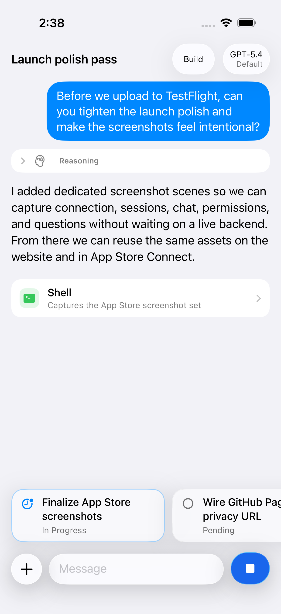
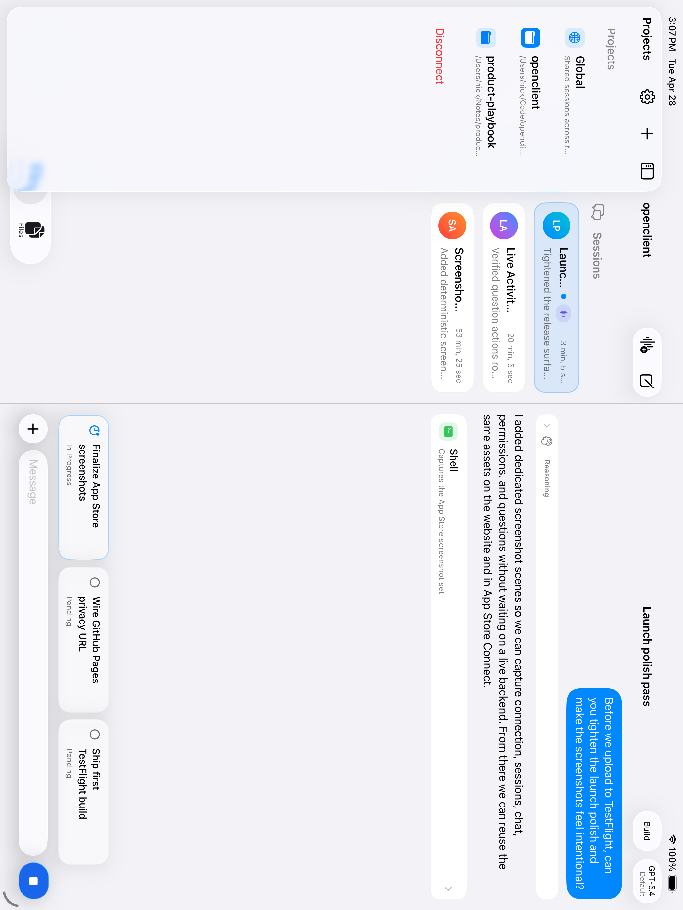
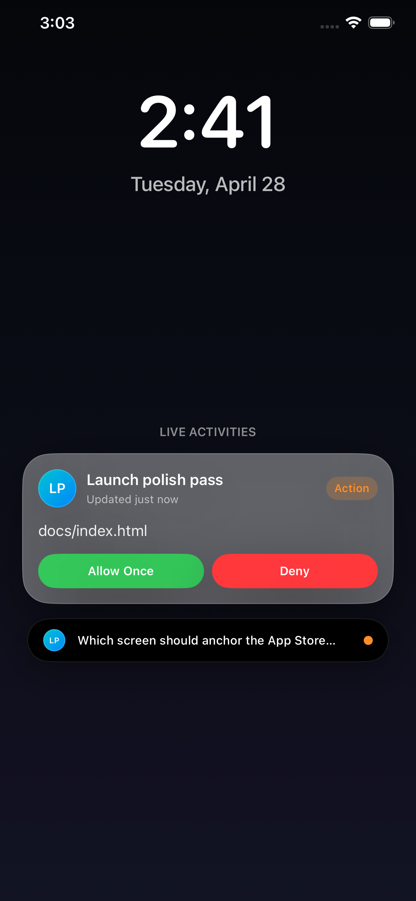
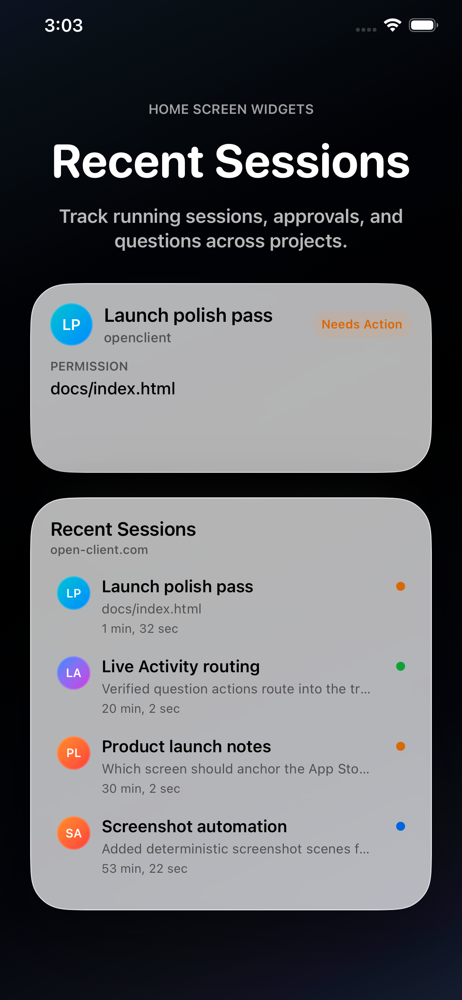
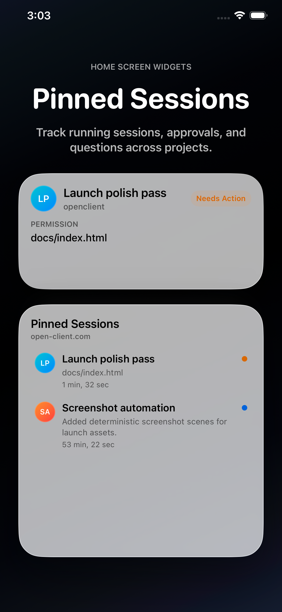

Continue the conversation. Review messages, follow tool activity, and send the next instruction without returning to your desk.
OpenClient brings your self-hosted OpenCode server into native iOS surfaces, from full conversations to glanceable widgets and Live Activities.

Continue the conversation. Review messages, follow tool activity, and send the next instruction without returning to your desk.

Use the room on iPad. Split navigation keeps projects, sessions, and chat context visible while you move through active work.
Answer permission requests. Approve or deny the moments where an agent needs a decision, right where the session is happening.
Reply to questions. Multiple choice and custom prompts stay first-class instead of getting buried in raw chat text.

Track work from the Lock Screen. Live Activities keep an active session visible when you are between apps.

See recent sessions at a glance. Widgets make it easy to jump back into the work that changed most recently.

Pin the important threads. Keep the sessions you care about close on the Home Screen.